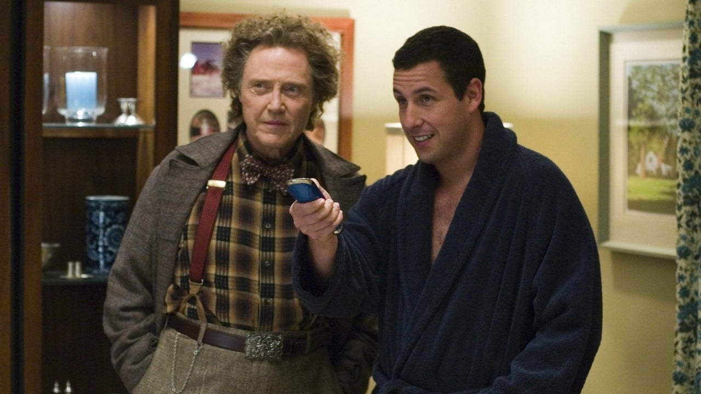
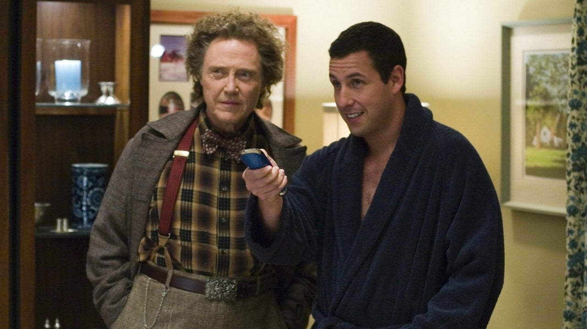

CLICK

Bem-vindo a uma viagem cinematográfica que vai mexer com o seu coração e a sua perspectiva sobre a vida! "Click" não é apenas um filme, é uma experiência que irá desafiar suas emoções e reflexões de uma maneira única e surpreendente.
No início, você conhecerá Michael Newman, interpretado brilhantemente por um ator que é mestre em equilibrar comédia e profundidade emocional. Michael é um homem comum, lutando para conciliar suas responsabilidades familiares e profissionais, como muitos de nós. Ele anseia por encontrar um equilíbrio entre o sucesso no trabalho e o tempo com sua família amorosa. Mas então, um elemento mágico entra em sua vida na forma de um controle remoto aparentemente comum. A reviravolta? Este controle remoto não é apenas para a TV. Ele controla o tempo. Sim, você leu corretamente - o tempo. Michael descobre que pode avançar, pausar e até mesmo retroceder os momentos de sua vida com o toque de um botão.
 

O que começa como uma ferramenta divertida e aparentemente inofensiva logo se torna uma jornada emocionalmente poderosa. À medida que Michael abusa do controle remoto para pular as partes "chatas" da vida, ele se vê perdendo momentos cruciais, preciosos e inestimáveis. Ele percebe que a vida não é feita apenas de momentos grandiosos, mas também dos pequenos detalhes que muitas vezes passam despercebidos. A direção habilidosa captura a montanha-russa emocional pela qual Michael passa. Você vai rir até as lágrimas com as situações hilárias que ele cria usando o controle remoto, mas também sentirá um aperto no coração quando testemunhar as consequências de suas escolhas impulsivas.
O elenco entrega performances excepcionais, trazendo à vida personagens que você vai se relacionar instantaneamente. A esposa de Michael, interpretada por uma atriz talentosa, personifica a força silenciosa que sustenta a família, enquanto o chefe de Michael, interpretado por um ator icônico, é a mistura perfeita de irritante e inspirador. Conforme o filme se desenrola, você será pego de surpresa por reviravoltas que desafiam suas expectativas. E então chega o clímax - um momento que é, ao mesmo tempo, emocionante e comovente. Você vai se ver torcendo fervorosamente para que Michael encontre uma maneira de consertar as coisas, de recuperar o que ele perdeu. "Click" é mais do que apenas uma comédia - é uma exploração sincera das complexidades da vida, das alegrias e tristezas que a compõem. Ele nos lembra que cada momento, por mais trivial que pareça, contribui para a tapeçaria única da nossa existência. Prepare-se para rir, chorar e refletir, porque este filme vai cativar sua mente e tocar seu coração de uma forma que você nunca imaginou.